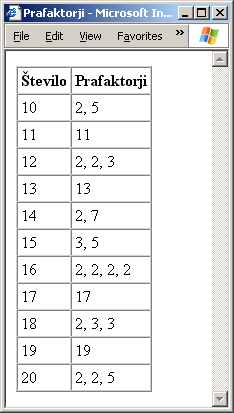

Utrjujemo snov 8. poglavja
Vprašanja z izbiro
- Želimo doseči, da se v primeru, da je pogoj enak true izvede stavek s1, sicer pa stavek s2 Kako to dosežemo?
- if pogoj==true s1; else s2;
- if (pogoj); s1; else s2;
- if (pogoj) s1; else s2;
- if pogoj; s1; else s2;
- Želimo doseči, da se v primeru, da je pogoj enak true izvedeta stavka s1 in s2, sicer pa stavek s3 Kako to dosežemo?
- if (pogoj==true) s1; s2; else s3;
- if (pogoj) s1; s2; else s3;
- if (pogoj) {s1; s2;} else s3;
- Z nobenim od naštetih stavkov.
- Podan je stavek if(p1) if(p2) s1; else s2; Kako moramo v tem stavku postaviti zavite oklepaje, da se bo stavek s2 izvršil takrat in samo takrat, kadar bo p1 enak false?
- if(p1) if(p2) {s1; else s2;}
- if(p1) {if(p2) s1; else s2;}
- if(p1) {if(p2) s1;} else s2;
- if(p1) if(p2) s1; {else s2;}
- Podan je stavek if(p1) if(p2) s1; else s2; else s3; Poleg tega vemo, da sta p1 in p2 oba enaka false Kateri od stavkov s1, s2 in s3 se bodo izvršili?
- s1, s2, s3
- s2, s3
- s3
- Izvršil se ne bo noben od treh stavkov.
- Imamo spremenljivki x in y, ki imata na začetku obe vrednost 3. Kakšni bosta njuni vrednosti, ko se izvrši koda if (x == 0) x = 1; y = 2;?
- x = 3, y = 3
- x = 1, y = 2
- x = 3, y = 2
- x = 1, y = 3
- Kako z uporabo zanke for dosežemo, da se bo v oknu brskalnika izpisalo 1234 ?
- for (i = 0; i < 4; i++) document.write(i + 1);
- for (i = 0; i < 4; i++); document.write(i + 1);
- for (i = 0; i < 4; i++) document.write(i);
- for (i = 0; i < 4; i++); document.write(i);
- Podan je stavek for(i = 3, j = 1; i > 0; i--) j *= i; Kakšno vrednost bo imela spremenljivka j, ko se stavek izvrši do konca?
- 1
- 2
- 3
- 6
- Podan je stavek for(i = 0, j = 0; i <= 6; i++) if (i % 2) j += i; Kakšno vrednost bo imela spremenljivka j, ko se stavek izvrši do konca?
- 0
- 9
- 12
- 21
- Podana je koda do {x *= n; n++;} while (n <= N); Kakšno vrednost bo imela spremenljivka x, ko se koda izvrši do konca, če vemo, da imata spremenljivki n in x na začetku vrednost 1, spremenljivka N pa 4?
- 1
- 6
- 24
- Nobene od naštetih vrednosti.
- Spremenljivka x ima vrednost 5. Kakšna bo njena vrednost, ko se izvede koda while (x > 5) x -= 2; x++;?
- 6
- 5
- 4
- 3
- Kakšna bo vrednost spremenljivke k, ko se izvede koda for(i = 0, k = 0; i < 5; i++) for (j = 0; j < 5; j++ ) {k++; if (j == 3) break;}?
- 3
- 4
- 19
- 20
- Podan je stavek while (p) s1; Kako bi enak učinek dosegli s stavkom for ?
- for(; p; s1) s1;
- for(; p; s1);
- for(p); s1;
- for(p) s1;
- Podan je stavek switch(x == 1){case true: x = 0; break; default: x = 1;} Kako bi enak učinek dosegli s stavkom if ?
- if (x == 1) x = 0; else x = 1;
- if (x == 1) x = 1; else x = 0;
- if (x == true) x = 0; else x = 1;
- if (x == true) x = 1; else x = 0;
- Koliko krat se je v stavku if (p1) while (p2) s1; else s2;, ki se je izvršil do konca, izvršil stavek s1, če vemo, da se stavek s2 ni izvršil?
- Se ne izvrši.
- Natanko enkrat.
- Vsaj enkrat.
- Poljubno krat.
- Koliko krat se je v stavku if (p1) do s1; while (p2) else s2;, ki se je izvršil do konca, izvršil stavek s1, če vemo, da se stavek s2 ni izvršil?
- Se ne izvrši.
- Natanko enkrat.
- Vsaj enkrat.
- Poljubno krat.
- Koliko krat se je v stavku while(p) s;, ki se je izvedel do konca, preveril pogoj p, če vemo, da se je stavek s izvedel 3-krat?
- 1-krat
- 2-krat
- 3-krat
- 4-krat
- V kakšnem vrstnem redu se v stavku for (s1; p; s2) s3; izvajajo stavki s1, s2, s3 in p?
- s1 p s2 s3 s2 s3 s2 s3 ...
- s1 p s2 s3 p s2 s3 p s2 s3 ...
- s1 p s3 s2 p s3 s2 p s3 s2 ...
- s1 p s3 s2 s3 s2 s3 s2 ...
V razmislek
V jeziku JavaScript napišite kodo, ki v obliki tabele po vrsti izpiše nekaj celih števil in za vsako število vse njegove prafaktorje. Prafaktorji so praštevila, ki jih moramo zmnožiti, da dobimo dano število. Program napišite tako, da na začetku s spremenljivkama start in stop določite območje števil, ki jih boste razstavili na prafaktorje. Ko bo stran izdelana, boste lahko zgolj s spreminjanjem teh dveh vrednosti dobili poljubne izpise. Tule je primer za vrednosti spremenljivk start = 10 in stop = 20:

Namig: eden izmed načinov, kako dobite prafaktorje števila N je, da za vsak n med vključno 2 in N preverite, če se deljenje N / n izide brez ostanka. Če se izide, potem N v resnici delite z n (N se zdaj zmanjša), in n izpišete v tabelo, saj je to eden izmed prafaktorjev. Postopek ponavljajte toliko časa, dokler se deljenje ne izide več. Šele potem povečajte n za ena in celoten postopek spet ponovite.